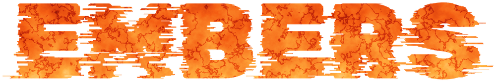

Sag es laut
EAZr [ˈiː.zər]. Sprich es englisch aus, und du sagst Isar, wie der Fluss, der durch München fließt. Das ist Absicht. Wir sind Münchner Kindl, hier geboren, und haben schon überall in der Stadt gewohnt. Der Name soll sich einbrennen und nach Zuhause klingen, egal wer ihn ausspricht.
Wie es anfing
Vor Jahren hat Noah Musik produziert. Launchpads, Ableton Live, lange Nächte. Aber das Equipment, das er gebraucht hätte, war immer außer Reichweite, und irgendwann hat er nicht mehr daran geglaubt, dass daraus etwas wird. Also hat er nur noch Musik gehört. Viel. Doch bloßes Zuhören stillt nicht den Drang, selbst etwas rauszugeben.
Dieses Jahr kam der Drang zurück. Erst ein DJ-Controller, Neuland für ihn, und unzählige Übungsstunden. Neu an den Decks, aber nicht in der Musik: Das Gespür für Tonarten, die zusammenpassen, und dafür, was ein Track mit Menschen macht, war immer da.
Laura war von Anfang an dabei. Seit über acht Jahren an seiner Seite, hat sie die lange Pause miterlebt und den Neustart mit angeschoben: raus aus dem Wohnzimmer, rein in die Stadt. Vieles davon ist an der Isar entstanden, an heißen Sommerabenden, an denen wir Bock auf eine Party hatten und einfach nichts los war.
Irgendwann ging es nicht mehr darum, dass einer irgendwo als Resident auflegt. Es ging darum, etwas Eigenes zu bauen, von dem andere ein Teil sein können.
Warum ein Kollektiv
Lauras Onkel hat uns immer gesagt: Was bei den Leuten bleibt, ist nicht die Sache selbst, sondern die Geschichte dahinter. Das ist hängen geblieben.
EAZr ist kein einzelner DJ mit Logo. EAZr ist ein Kollektiv: ein paar Leute, die jeweils etwas anderes in dieselbe Nacht mitbringen.
Und wir bauen alles selbst. Die Website, auf der du gerade bist, das Artwork, die Stream-Overlays, die Playlists, jedes Reel. Kein Label, keine Agentur. Nur wir, und wir lernen vor aller Augen.
Manches ging auch vor aller Augen schief. Unseren ersten Livestream an Halloween hat Instagram mitten im Set abgebrochen. Also sind wir zu Twitch gegangen und haben uns unsere eigene Bühne gebaut.
Wohin es geht
EMBERS by EAZr. ALL THINGS HOUSE. DJ-Sessions mit Host, live auf Twitch, und ab Anfang 2027 in einem Raum voller Leute. Keine Kommerzveranstaltung. Musik, Tanzen und eine Nacht, die man wiederhaben will.
Und irgendwann ein eigener Ort.

by EAZrDu bist früh dran.
Die beste Zeit, uns zu finden. Alles ab hier schreiben wir zusammen.
- Noah steht zum ersten Mal an den Decks. An der Isar entsteht die Idee für EAZr.
- Die ersten Crate Picks und Road-to-Live-Clips gehen raus.
- Erster Livestream an Halloween. Instagram bricht ihn mitten im Set ab.
- Wir ziehen zu Twitch. EMBERS by EAZr ist geboren.
- EMBERS 001. Die erste Nacht in einem Raum voller Leute._